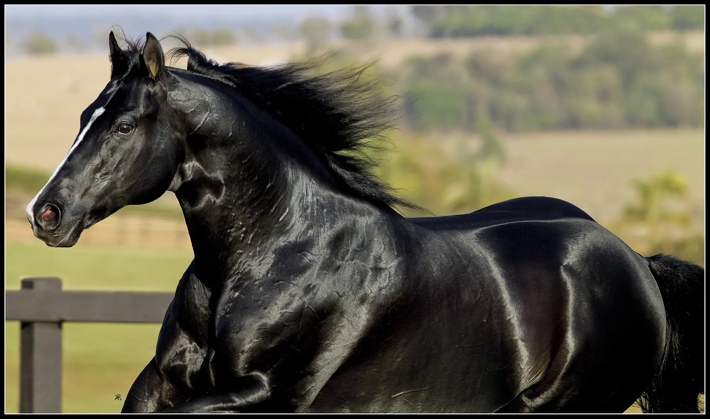

The Tux N Rolls bloodline: offspring, grandchildren and results
A son of First Down Dash, Tux N Rolls became the backbone of B2B Ranch breeding and left barrel racing champions in every generation.

The numbers
The offspring of Tux N Rolls have earned 7,672 ABQM points and R$ 5,018,420.75 on the SGP barrel racing record. With a speed index of 97, Tux N Rolls was born on February 19, 1999 and died in May 2023.
Leading offspring
- B2B Lovergirl Rolls: the only Triple Crown winner in Brazil.
- B2B Noa Carat Rolls: Barretos champion in 2023.
- B2B Maximus Rolls: Horse of the Year in 2018.
- B2B Lucius Ta Fame: the stallion carrying the line forward.
- B2B Quaker Tux Guy: titles at the Brazilian Congress, Grand Slam Cutter, PF and Copa WV.
- B2B Madeleine Rolls: first in Amateur in 16.549.
- B2B Morgana Rolls: runs in the 16s and is an embryo donor.
The next generation
The line continues through grandchildren such as B2B Brave Rolls and B2B Aphrodite Rolls, daughters of B2B Lucius Ta Fame, and B2B Darwin Bar Belle, a Potro do Futuro foal.